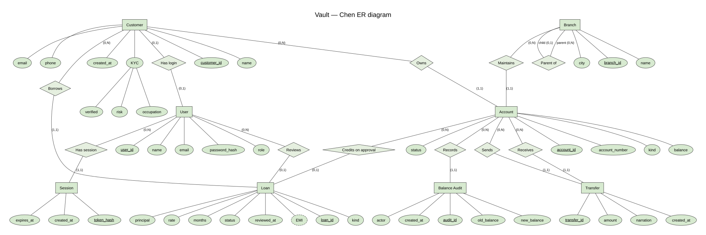
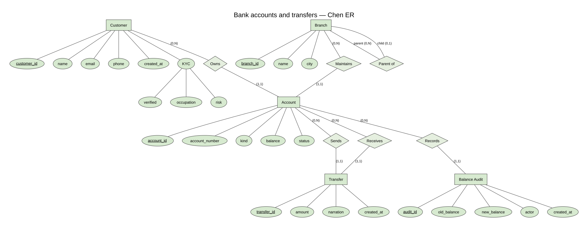
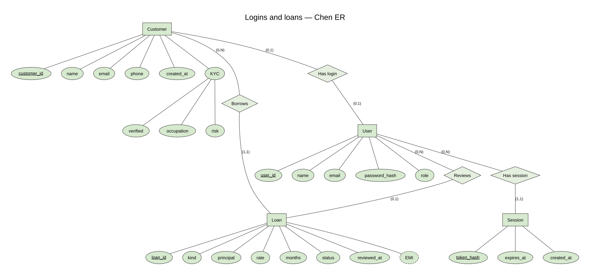
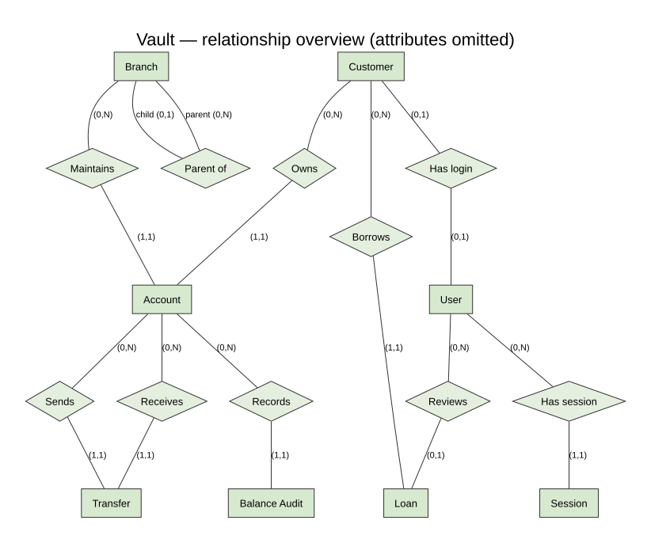
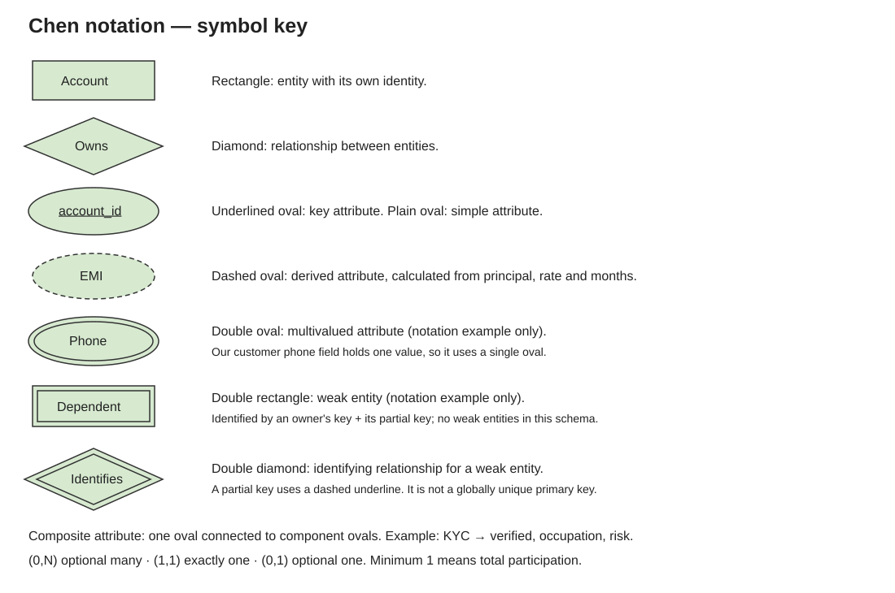
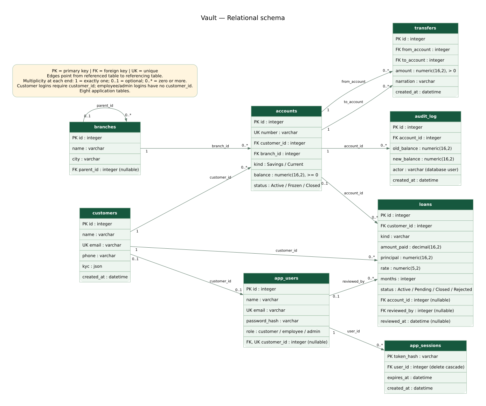
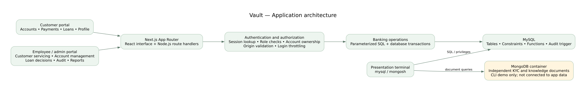
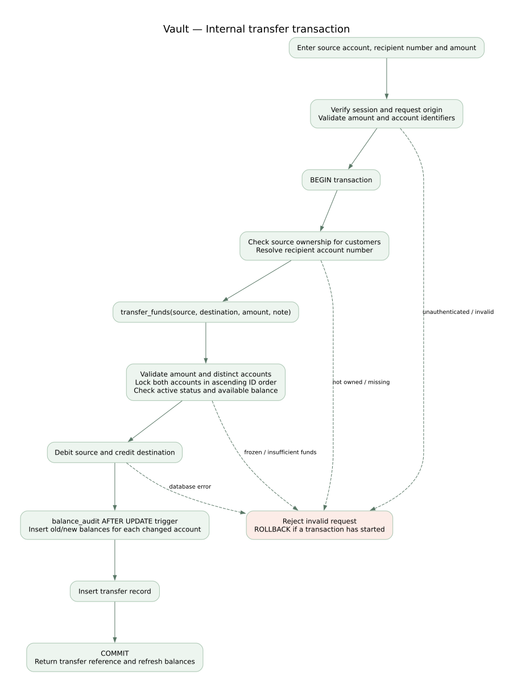
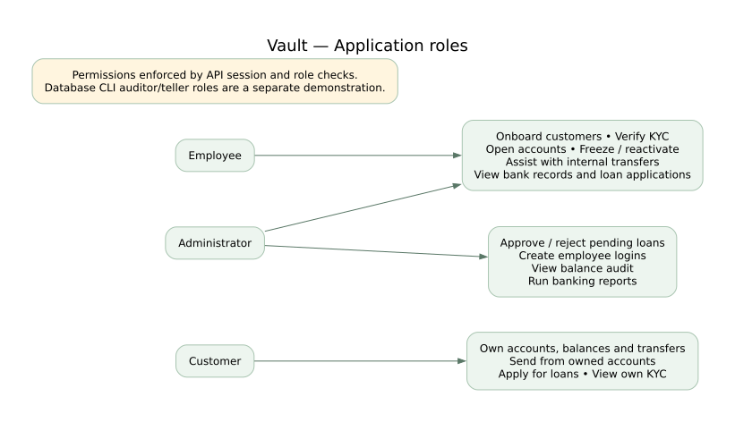
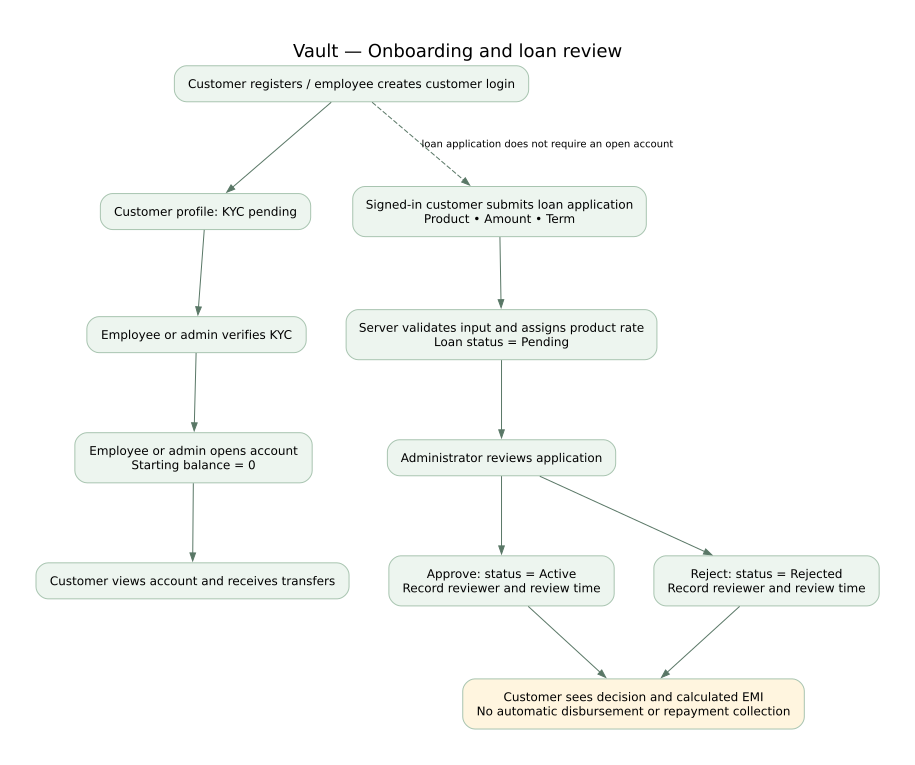

Chen ER diagram
Entities, relationships, attribute ovals and min/max participation.

Banking ER detail
Accounts, transfers, branches and automatic balance audit.

Login and loan ER detail
Customer profiles, users, sessions and loan review.

Relationship overview
All relationships without the attribute ovals, for readability.

Notation key
Meaning of each symbol; weak and multivalued examples are illustrative only.

Relational schema
SQL tables and columns, including foreign keys.

System architecture
Next.js, authorization, MySQL and the separate MongoDB demo.

Transfer processing
Validation, locking, balance updates, trigger audit and commit/rollback.

User permissions
Customer, employee and administrator responsibilities.

Customer onboarding and loans
KYC, account opening, application submission and admin review.
